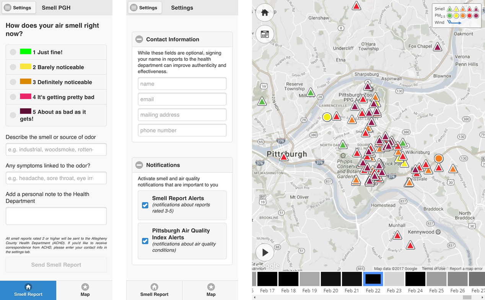

|
Smell, Submit, Share! |
|
|
Pittsburgh was named one of the top 15 most livable cities in the US, but our air quality is often worse than other cities on that list. Foul odors outside are typically symptoms of a serious pollution problem in our region. We, our children, our friends and families all breathe in this air. If our air smells toxic, then we are likely inhaling toxins. Smell PGH crowdsources smell reports so we can track how pollutants travel through air across Pittsburgh. Odor complaints submitted through the app go directly to the health department so they can better monitor and act on these complaints.

The above images demonstrate the user interface of Smell PGH. The left image shows the submission console. On the console, citizens can select the severity of the smell, describe the characteristic of the smell, explain any symptom they are experiencing that may be related to the smell, and provide notes to the local health department. The middle image shows the setting menu, where users can decide if they want to receive push notifications and to provide personal identifiers when submitting smell reports to the local health department. The right image shows the map-based visualization with crowdsourced smell reports, sensor stations, and wind directions. Triangles indicate smell reports, with color denoting the level of severity. Circles indicate sensor stations, where the color means the seriousness of fine particulates. The bottom of the visualization features a timeline with squares, where users can select different dates. The gray level of the square indicates the average value of smell reports in the corresponding date. Smell PGH was developed by the CMU CREATE Lab with support from the Heinz Endowments, and in collaboration with: ACCAN, PennEnvironment, GASP, Sierra Club, ROCIS, Blue Lens, LLC, PennFuture, Clean Water Action, Clean Air Council. Please let us know which aspects are working well and which could be improved via the App Feedback Form. We really appreciate your input! |
|